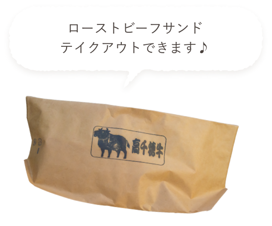

お知らせ記事のタイトルです。これはタイトル。サンプルサンプル。お知らせ記事のタイトルです。お知らせ記事のタイトルです。これはタイトル。
お知らせ記事のタイトルです。これはタイトル。サンプルサンプル。お知らせ記事のタイトルです。お知らせ記事のタイトルです。これはタイトル。サンプルサンプル。お知らせ記事のタイトルです。お知らせ記事のタイトルです。これはタイトル。サンプルサンプル。お知らせ記事のタイトルです。お知らせ記事のタイトルです。お知らせ記事のタイトルです。これはタイトル。サンプルサンプル。お知らせ記事のタイトルです。

食べておいしい、
もらってうれしい。
高千穂牛の
ローストビーフ
毎月 40kg 限定販売
ROAST BEEF OF TAKACHIHO-BEEF
LIMITED SALE OF 40KG EVERY MONTH
TAKACHIHO-BEEF
高千穂牛について01
高千穂生まれ、
高千穂育ちの黒毛和牛
刈干切唄歌い継がれる、神話の里高千穂で生まれ育った和牛高千穂牛。ミネラル豊富な山の草を食べ、一頭一頭大切に育てられています。
02
お肉が柔らかく、
脂に甘みがある
「第9回全国和牛能力共進会」において見事内閣総理大臣賞を受賞した高千穂牛はやわらかく、脂に甘味があり、 芳醇な味わいはまさに格別です。
ROAST BEEF OF TAKACHIHO-BEEF
高千穂牛のローストビーフ
クール便でお届けいたします。
これはダミーテキストサラダやごはんとも相性抜群です。その他にも、お好みでわさび醤油やポン酢につけてお召し上がりください。この花お手製の特製おろし玉ねぎソースは、サラダやごはんとも相性抜群です。その他にも、お好みでわさび醤油やポン酢につけてお召し上がりください。
KONOHANA SPESIAL SAUCE
ローストビーフにかける
この花お手製タレ付き
この花お手製のおろし玉ねぎ入りソースは甘辛く、サラダやごはんとも相性抜群です。
その他にも、お好みでわさび醤油やポン酢につけてお召し上がりください。
cafe KONOHANA
喫茶 この花天岩戸神社の門前町にあるコーヒーの専門店。
スペシャルティ―コーヒー・ハニーコーヒー・ウィンナーコーヒーなど、こだわりのコーヒーを提供しております。
コーヒーの他にも、フードメニューも準備しており高千穂牛ローストビーフを使用したサンドイッチとドッグは人気商品！
まちづくりの活動で、「この花咲かそう会」というグループで活動を行なっており、夢の花を咲かせる第一歩でお店をオープンしました。
喫茶 この花 face book
所在地：〒882-1621
宮崎県西臼杵郡高千穂町大字岩戸793-2
営業時間：10:00~17:00
店休日：毎週木曜日
TEL：0982-82-2755
- 
TOPICKS
お知らせ2020
10 / 30 FRI